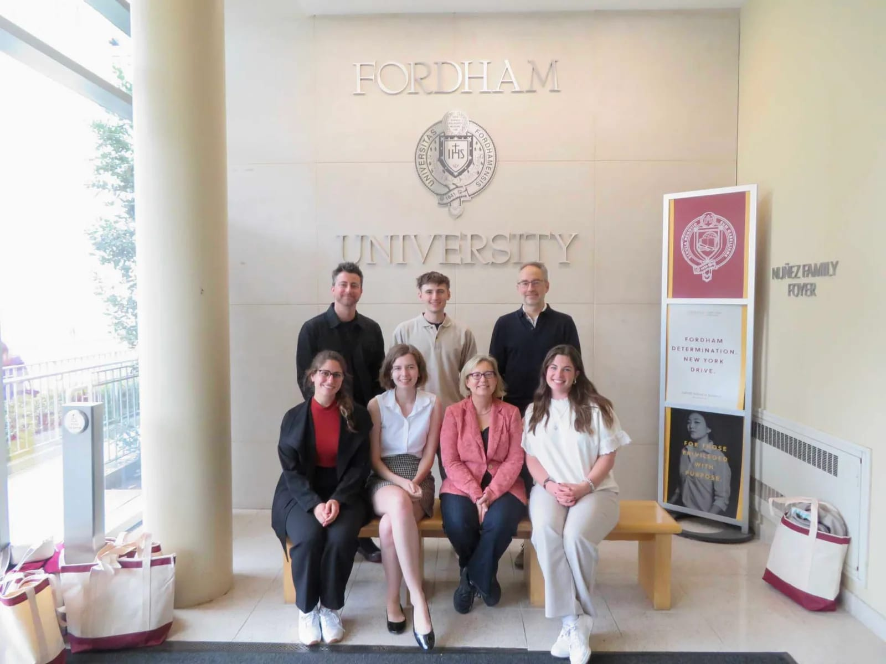

- TYPE
- Facilitation, Design Thinking
- TEAM CREDIT
- NEXT Innovation Scholars
- DATE
- 2022 – Present
Building and Facilitating Design Thinking Workshops
OVERVIEW
Design thinking is at best a vague concept and at worst intentionally confusing. However, when an audience can be taught in a way that is specific to them, design thinking can become a major unlock without a major cost of resources. The number one question that must be asked when designing any workshop is: how does this lesson help the audience do what they do better? Below are just a few of the workshops I have helped design and facilitate.
Fordham University
NEXT Innovation Scholars Sophia Lammi, Charlie Harker, and I traveled to New York with our Program Director Aaron Bradley and Program Manager Sydney Myers to teach a workshop to Fordham business students. This was just one part of our continuous partnership with Fordham Professors Bozena Mierzejewska and Axel Roepnack.
- Topic — How to Conduct a User Interview
- Audience — Fordham Masters of Business Students
- Location — Fordham University, New York City

University Honors Design Thinking Modules
- Topic — An Introduction to Design Thinking
- Audience — University Honors Freshmen
- Location — University of Cincinnati
A team of students and I were asked to design a workshop to introduce design thinking, then facilitate it with twelve sections of the Honors Gateway class. Teaching the honors classes can be difficult, notably because the class is all first-semester freshmen and only an hour long. Both were key constraints we had to design around.
GraphUC Hackathon
- Topic — Becoming Problem-Obsessed with Design Thinking
- Audience — Hackathon Participants
- Location — University of Cincinnati
The GraphUC Hackathon is a blockchain-focused hackathon held each fall at the University of Cincinnati, with workshops running throughout the day. The organizers asked me to design and facilitate a design thinking workshop to help students come up with an idea for their hackathon project.
DASHIE Landscape Analysis
- Topic — Landscape Analysis in a University Setting
- Audience — University Students
- Location — University of Cincinnati
As part of my work with Stanford's University Innovation Fellows, my team wanted to run a STEEP analysis (Social, Technology, Economic, Environmental, Political) with current students to rapidly generate trends, insights, and observations. But STEEP doesn't map well onto higher education, so we developed DASHIE — Diversity & Inclusion, Academics, Social, Health, Innovation, and Entrepreneurship — as a new set of categories, then led an ideation workshop with thirty students.